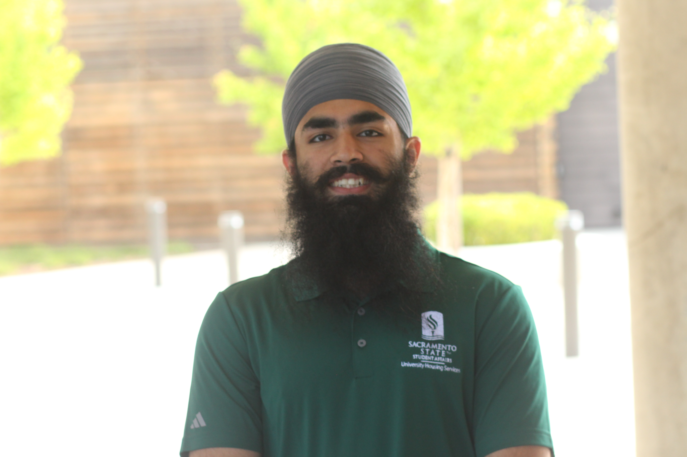

Haramrit Singh Suri

Objective
A highly driven individual having a zeal to learn new skills looking for a challenging position in an organization specializing in tech which will be the impetus to my professional and personal prosperity and will play to my strengths.
Education
Work Experience
- Resident Advisor - University Housing Services – Sacramento, CA
- Managing residents while fostering a positive community in the building.
- Organizing various programs and social events for residents to help them academically and improve their life skills.
- Performing various administrative duties while ensuring University Housing policies are being adhered to.
- Product – User Experience Intern - Khalis Foundation – Milpitas, CA
- Worked closely with the team to gain a better understanding of Product Management, ownership, user experience and product discovery.
- Conducted User Interviews, studied trends & analytics, and synthesized data to provide feedback and improve User Experience.
Skills
- Programming Skills - C++, Java, Python, HTML, CSS, JavaScript
- Language Skills - Proficient in English, Punjabi, Hindi
Awards & Honors
- Dean's Honors List - Spring 2020, Spring 2021, Fall 2022, Fall 2023.
Community Service
- Co-President - Sikh Student Association at Sacramento State
- Assisted in tabling on campus to educate students and faculty about Sikhs during California's Sikh American Awareness and Appreciation Month.
- Assisted in organizing various online meetings and events for the club members during the pandemic while also collaborating with Sikh Student Associations from UC Davis, UC Berkley, and University of Washington.
- Assisted in setting up a weekly homeless food drive that has been serving the greater population of Sacramento for the past 4 years and has served over 39,000 meals to the people in need.
Miscellaneous
Hobbies - I love watching sports, Anime and listening to music. Here is a link top anime list.
Here are my contact details.